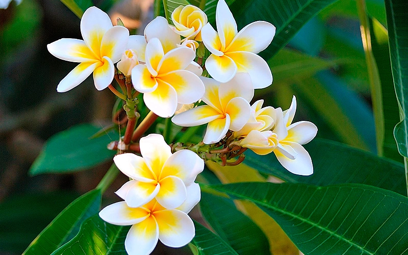

Nicaragua

Historia
Nicaragua es un país de América Central ubicado entre el océano Pacífico y el mar Caribe, conocido por su espectacular territorio con lagos, volcanes y playas. El extenso lago Managua y el icónico estratovolcán Momotombo se ubican al norte de la capital, Managua. Al sur está Granada, que se destaca por su arquitectura colonial española y un archipiélago de islotes navegables con abundantes especies de aves tropicales.
Extensión territorial
Nicaragua es un país de América Central ubicado entre el océano Pacífico y el mar Caribe, conocido por su espectacular territorio con lagos, volcanes y playas. El extenso lago Managua y el icónico estratovolcán Momotombo se ubican al norte de la capital, Managua. Al sur está Granada, que se destaca por su arquitectura colonial española y un archipiélago de islotes navegables con abundantes especies de aves tropicales.
Símbolos patrios
Madroño

Sacuanjoche
Guardabarranco Común
Departamentos
Boaco, Carazo, Chinandega, Chontales, Estelí, Granada, Jinotega, León, Madriz, Managua, Masaya, Matagalpa, Nueva Segovia, Río San Juan, Rivas, RAAN y RAAS.
Lugares turísticos
Lago Cocibolpa